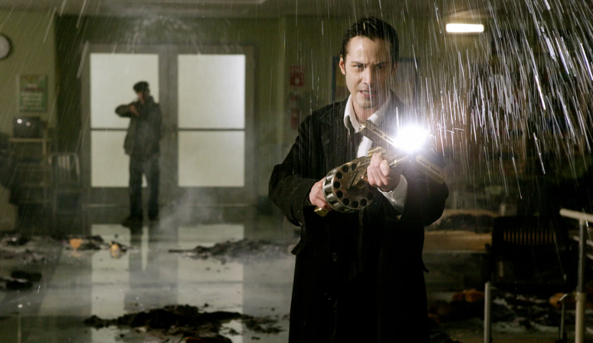
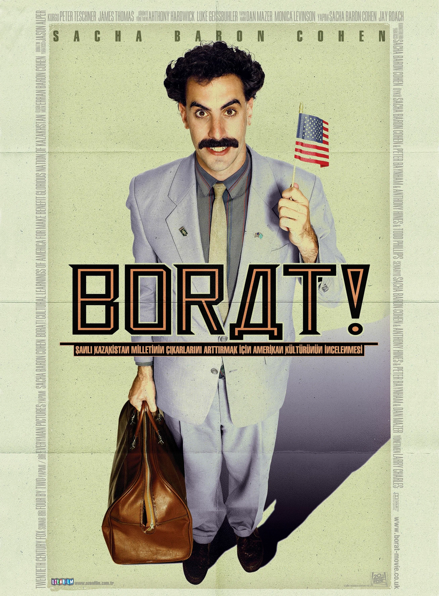

Джон Константин
Один из запоминающихся персонажей времен 2000х годов - это главный фильма "Константин: Повелитель тьмы". Джону Константину удалось не только побывать в аду, но и вернуться обратно. Родившись с неугодным самому себе талантом — способностью распознавать помесь ангелов и демонов, которые бродят по земле в облике людей, — Константин под давлением обстоятельств пытается совершить самоубийство, лишь бы избавиться от мучительных видений. Но неудачно. Воскрешенный против собственной воли он снова оказывается в мире живых. Теперь, отмеченный печатью суицида и получивший временное право на жизнь, он патрулирует границу, разделяющую рай и ад, тщетно надеясь на обретение спасения путем сражения с земными ставленниками зла. 
Борат
Еще один запоминающийся культовый персонаж 2000х годов - Борат. Телеведущий из Казахстана Борат отправляется в США, чтобы сделать репортаж об этой «величайшей в мире стране». Однако по прибытии оказалось, что главная цель его визита — поиски Памелы Андерсон с целью жениться на ней, а вовсе не съемки документального фильма.
